Estimulación Temprana
Sesiones de juego y movimiento que despiertan los sentidos y acompañan los primeros logros: gatear, caminar, comunicarse.
Preguntar por este programaGrupos pequeños. Atención cercana. Mayor avance.
*No aplica para CTE ni Curso de Verano.
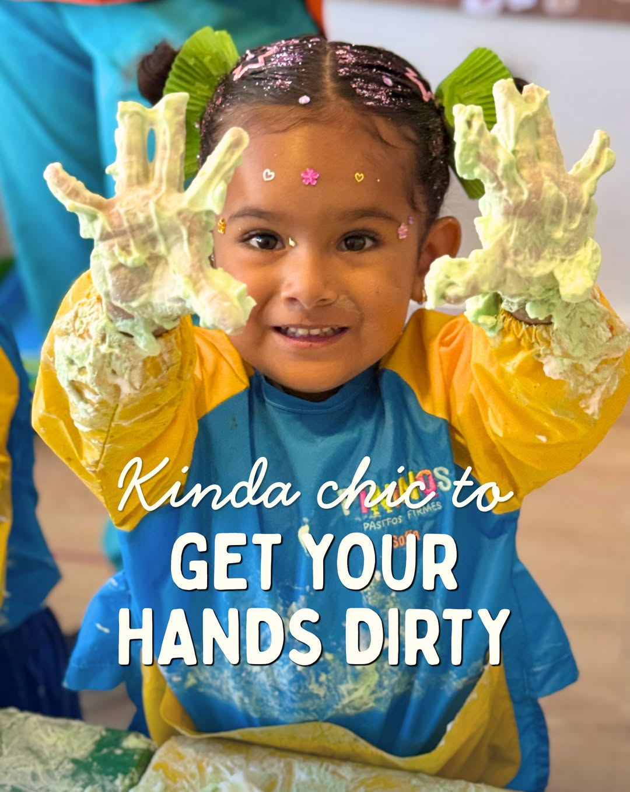
[COMPLETAR] X años acompañando familias poblanas
Equipo profesional con vocación por la primera infancia
Grupos pequeños y atención personalizada
Calzada Zavaleta 124, Santa Cruz Buena Vista
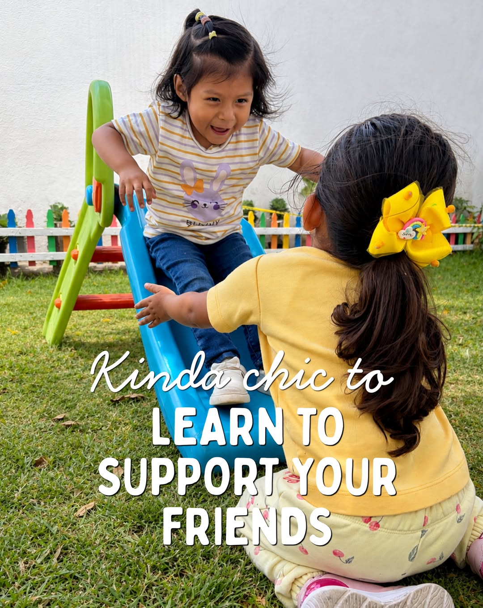
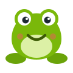
Somos un equipo de profesionales con el deseo y la vocación compartida de acompañar bebés y niños en el desarrollo de sus habilidades por medio de la exploración y el descubrimiento del mundo en un entorno seguro.
De los 6 meses a los 7 años, con horarios que se adaptan a tu día a día en Puebla.
Sesiones de juego y movimiento que despiertan los sentidos y acompañan los primeros logros: gatear, caminar, comunicarse.
Preguntar por este programaRutina diaria con lenguaje, arte, música y juego al aire libre para que tu hijo gane autonomía entre amigos de su edad.
Preguntar por este programaApoyo con tareas y talleres vespertinos en un espacio tranquilo, mientras tú terminas tu jornada.
Preguntar por este programaUn día completo de juego, retos y descubrimientos. Ideal cuando necesitas un espacio seguro por unas horas.
Preguntar por este programaSemanas temáticas con arte, ciencia, cocina y juego para que las vacaciones sean memorables.
Preguntar por este programaLos días de Consejo Técnico Escolar y los puentes, aquí tienen un plan divertido y tú, tranquilidad.
Preguntar por este programaTambién ofrecemos guardería, clases por hora y talleres vespertinos. Cuéntanos tu horario y armamos una opción a tu medida.
Momentos reales de estimulación, juego y talleres. Toca la bocina para escuchar cada video.
Estimulación temprana
Juego libre y exploración
Talleres de arte
Música y movimiento
Ofrecemos un espacio que sea un segundo hogar para los bebés y niños, donde puedan retar sus habilidades y crecerlas por medio de la curiosidad, la exploración y el aprendizaje significativo.
Nuestra metodología tiene influencia de Reggio Emilia y de las dos primeras etapas de Piaget —sensorio-motriz y pre-operacional—, porque creemos que el niño aprende haciendo, tocando y preguntando.
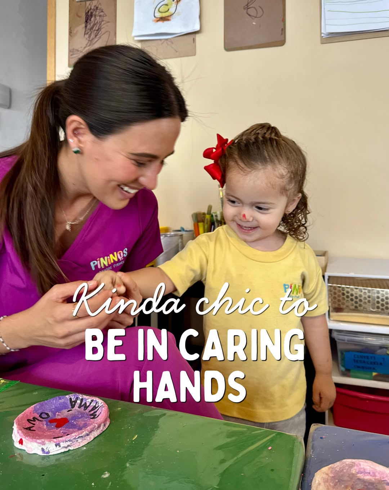
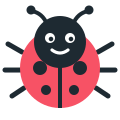
Reseñas reales de familias en Google, 5 de 5 estrellas.
Hermoso kinder y lugar feliz para los niños. Muy bien ubicado. El sistema q llevan es ideal para iniciar la educación de los niños. Las maestras muy cariñosas y muy preparadas.
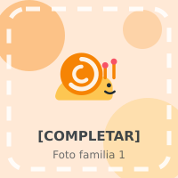
Gabriela MoralesReseña de Google · 2 opinionesPadrísimo, tienen actividades muy lindas y educativas para los niños, siempre salen felices. El lugar muy limpio, cuidado y seguro.
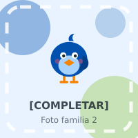
Sofía CorralReseña de Google · 1 opiniónLas instalaciones están muy cuidadas y bonitas, lo más lindo son las misses con mucha experiencia y un sistema integral.
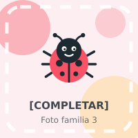
Monica de andaReseña de Google · 1 opiniónMuy bonito lugar, el trato es increíble, los niños salen felices. Muy recomendable.
Gran lugar, lo llevan excelentes personas. Buscan lo mejor para los niños.
Un espacio donde los niños van felices y están cuidados por personas de mucha confianza.
Que puedan intentarlo solos, equivocarse y volver a intentar.
Respetar los ritmos propios y los de los demás, sin prisas.
Aprender juntos: compartir, esperar turno y pedir ayuda.
Preguntar, imaginar y encontrar formas nuevas de resolver.
Un proceso simple y acompañado, de la primera llamada al primer día.
Llenas la solicitud con los datos de tu hijo y de la familia.
Previa cita y el mismo día: nos conocemos y observamos a tu hijo en el espacio.
Te confirmamos el lugar y realizas el pago de inscripción.
Nos envías la documentación por WhatsApp, sin vueltas de más.
Recibes el material y los uniformes. ¡Listos para empezar!
Lugares limitados por grupo. Inicio del ciclo: [COMPLETAR fecha].
Quiero iniciar mi proceso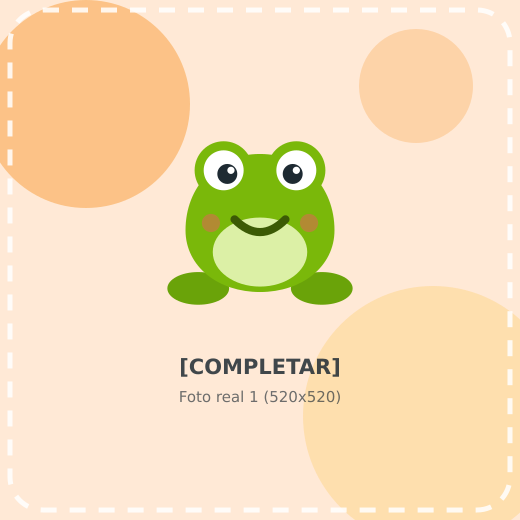
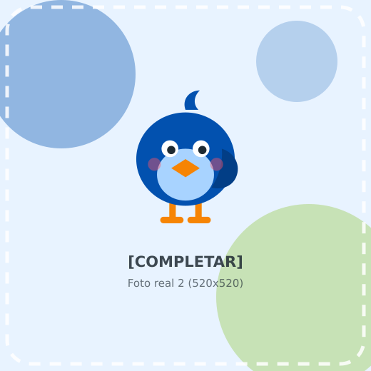
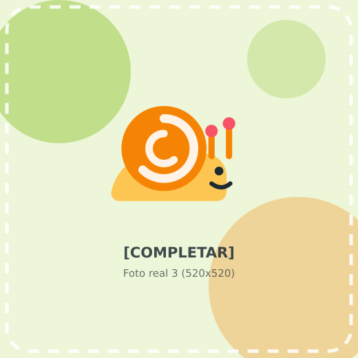
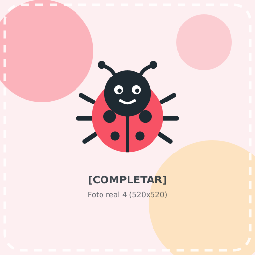
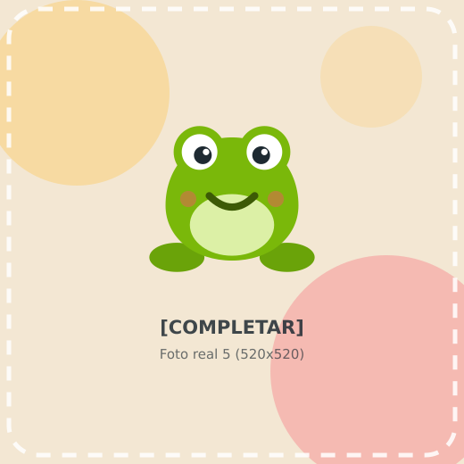
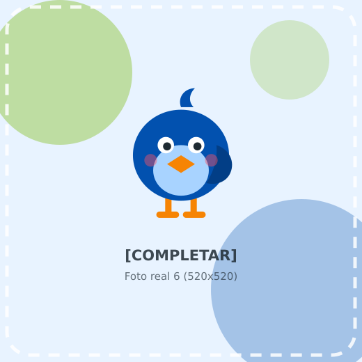
Conoce el espacio, saluda al equipo y deja que tu hijo juegue un rato con nosotros. Sin compromiso.
*No aplica para CTE ni Curso de Verano.
Agendar por WhatsApp